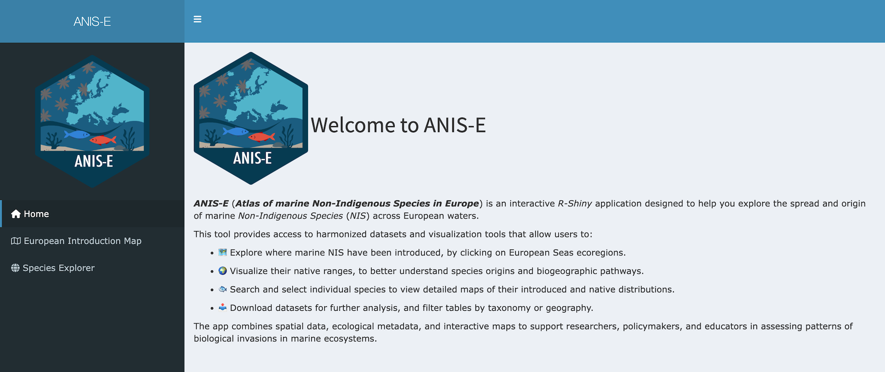
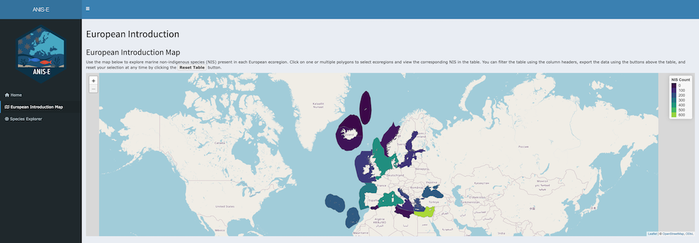
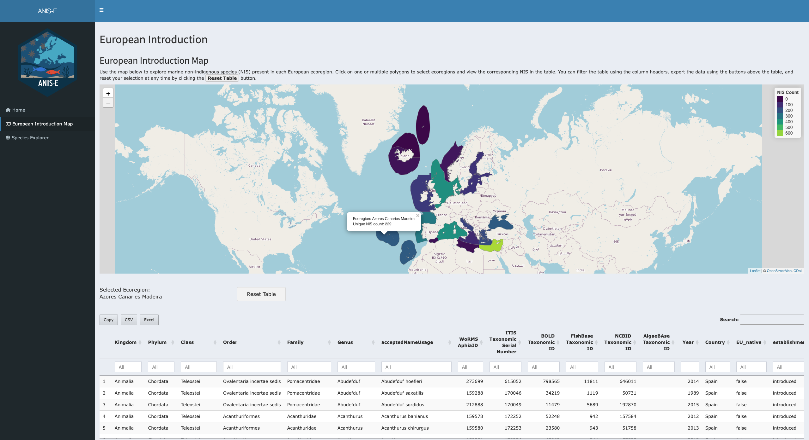
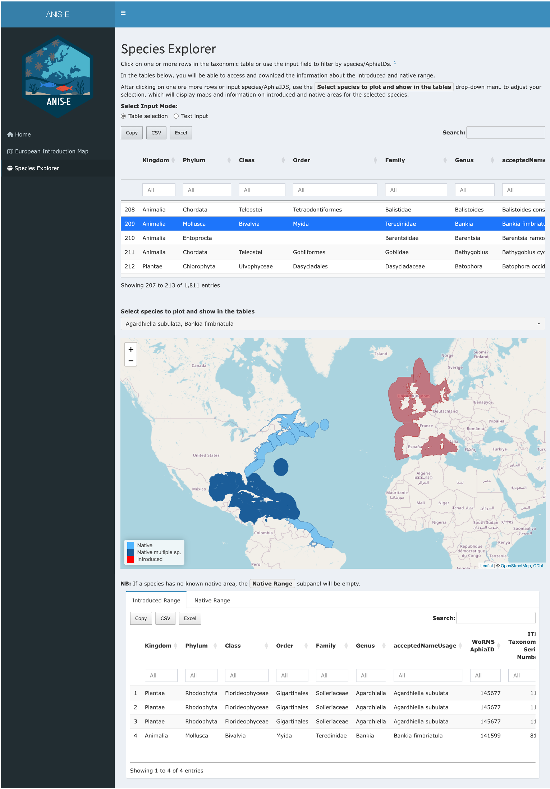
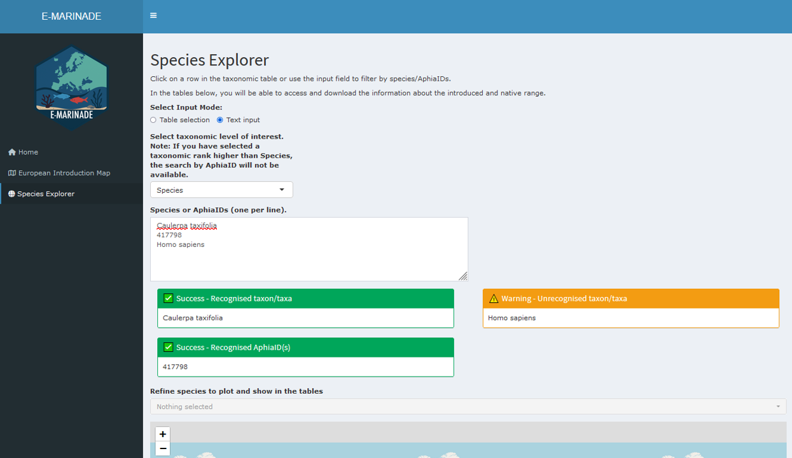
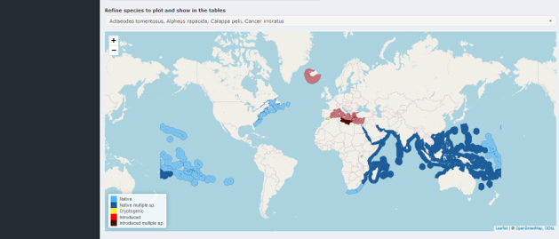
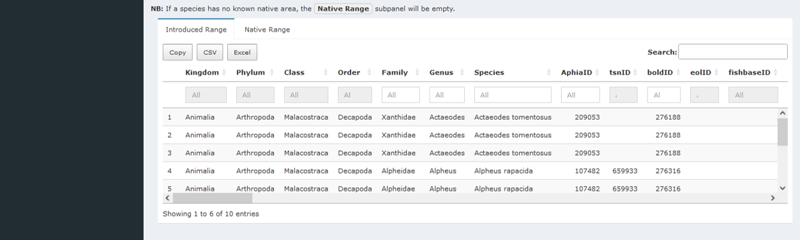

E-Marinade
ShinyE-Marinade.RmdIntroduction,
This vignette explains how to use the Shiny application to explore Non-Indigenous Species (NIS) in European seas. This vignette will present you how to launch the app; use the European Introduction Map to inspect regional NIS richness and list species; Use the Species Explorer to explore introduced and native ranges of particular species and finaly export results
Quick Start
To launch the app, simply write in the terminal:
After launch, the browser shows the Home page with a
left sidebar for navigation.

Application Overview
The app provides two workspaces:
- European Introduction Map — regional view: where NIS occur and which species are present.
- Species Explorer — species view: introduced vs native ranges for selected taxa.
All data tables support search, filter
(when available), scroll, and export
(Clipboard / CSV / Excel).
European Introduction Map (Regional Exploration),
The aim of the European Introduction Map is to inspect
NIS richness by MEOW ecoregion and to list the species present in each
selected region.

The map is composed of polygons that correspond to MEOW ecoregions (see Spalding et al. 2007 for a description of this regions). Each polygon is filled with a color that represents the number of unique NIS recorded in that ecoregion. When you hover over a region, a tooltip appears showing the ecoregion name and the corresponding NIS count. You can navigate the map by zooming and panning with your mouse, trackpad, or the on-screen controls.
To inspect a specific region, simply click on a polygon. The label
“Selected Ecoregion(s)” will update, and the species table located below
the map will refresh automatically to display all species present in the
chosen region. It is also possible to select multiple regions, in which
case the table will aggregate the species across all selected areas. To
clear the selections and return to the default view, use the
Reset Table button.

The species table displayed under the map contains several columns: the taxonomy (from Kindgom down to Species), the AphiaID identifier linking the species to the World Register of Marine Species database, the year of the first observation of the taxon in the area, the MSFD subregion, and the associated Realm, Province, and Ecoregion under the Marine Ecoregion of the World framework. The table also specifies the original source for each record.
Species Explorer
The purpose of the Species Explorer is to inspect both the introduced and native ranges of selected species. Users can provide input either by selecting directly from a taxonomic table or by entering species names or AphiaIDs through a text box.
In Table mode, the process is straightforward: locate
the taxonomic table, click on a row to select a species, and then use
the species drop-down menu to adjust your selection, allowing for
multiple species to be explored at once.

In Text mode, the input is given manually. You switch
the input to text, choose a taxonomic level (the default is
Species, and AphiaIDs are disabled for broader levels such as
Genus or Family), and paste one entry per line, either a species name or
an AphiaID (only available if the taxonomic level choosen is “Species”).
For example:
Caulerpa taxifolia
417798
Homo sapiens

The app displays a warning box if any names or IDs are invalid. Once corrected, the species drop-down menu can be used to finalize the set of species to be examined.
Once species are selected, the app displays a single interactive map
that overlays both introduced/cryptogenic and native ranges at the same
time. The legend clearly distinguishes between these categories so that
users can interpret the results easily. When multiple species are
selected, overlapping regions are styled distinctly, and if a region
contains both introduced and cryptogenic records, they are shown in a
different color for clarity. Note that the
Native multiple sp. or Introduced multiple sp.
in the map legend indicate that the ecoregions is the native area of two
or more selected NIS, or is the introduced region of two or more
NIS.

Below the maps, two range tables are provided. The Introduced
Range table lists all regions where the selected species are
introduced or cryptogenic, while the Native Range table lists
their native regions. These tables include powerful functions such as
global search, optional column filters, data export in Copy
(clipboard), CSV, Excel formats, and scroll
bars to handle wide or long datasets. Note that if no data are available
for a given category (for example, when no native polygons are known for
a species), the corresponding panel remains empty.

Use Cases
The following examples illustrate the main ways to interact with the application. Each use case outlines a sequence of actions and the corresponding outputs.
For a regional scan, start by opening the European Introduction Map. Hover over the regions to check the NIS counts, then click on one or more regions to select them. The species table below the map will update automatically to show the species recorded in the selected areas. Once reviewed, the table can be exported in CSV or Excel format for further analysis.
For a species comparison, go to the Species Explorer in
table mode. Select one or multiple species from the
taxonomic table. Use the map to see Below the maps, consult the
introduced and native range tables, and export them if needed.
For a batch list query, change the input mode to text.
Paste a list of species names/taxonomic level of interest or AphiaIDs,
one per line, into the text box. Any invalid entries will be flagged in
a warning box; correct them and re-run the search if necessary. The
Species The drop-down menu allows you to refine the list of valid
species to plot and show in the table, after which you can explore the
maps and range tables and export the results.
Tips & Troubleshooting
Empty results: If a panel shows no data, this usually means that the species does not have records for that specific category. For example, some species may lack native polygons in the database. In such cases, check the other panel (Introduced or Native) to see if information is available there.
Invalid text input: Errors can occur if species names are misspelled or if AphiaIDs are entered incorrectly. Always use the correct spelling and verify AphiaIDs against reliable sources such as WoRMS. When invalid entries are detected, the app displays a warning box listing the problematic items so that you can correct them and re-run the search.
Performance: Large queries with many species may slow down map rendering and table updates. To improve responsiveness, start with a smaller set of species and gradually increase the number if needed.
Reset: If the interface becomes cluttered or selections are confusing, you can reset easily. In the Species Explorer, use the
Deselect Allbutton of the drop-down menu to reset the taxonomic table and outputs. In the European Introduction Map, use theReset Tablebutton to clear all selected regions.